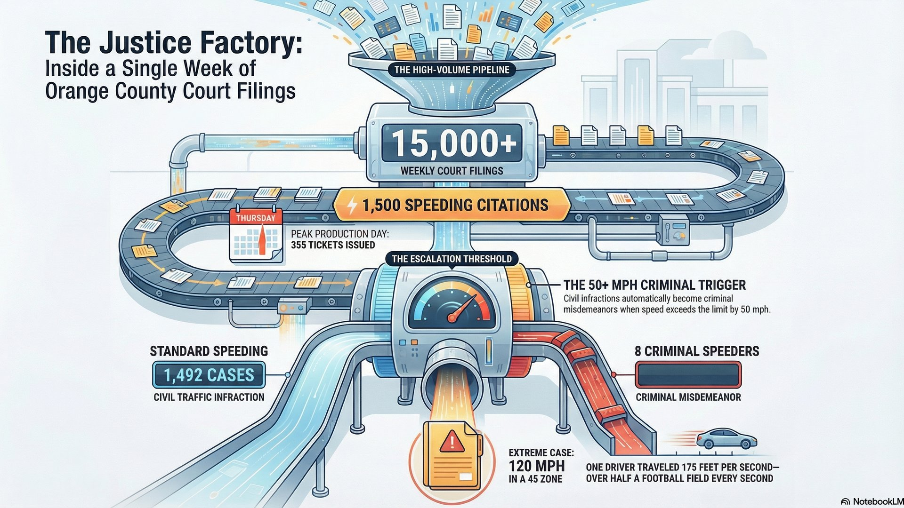

What 15,000 Orange County Court Records Reveal About Crime

We analyzed 15,000+ Orange County court filings from a single week of data. What we found tells a story about how the criminal justice system actually works -- who gets arrested, when, for what, and the consequences that follow. The numbers are striking, surprising, and sometimes sobering.
If you're facing charges in Orange County, understanding these patterns matters. They show the scale of the system, the timing of enforcement, and the real-world impact of criminal convictions. Here's what the data reveals.
Speed Violations: Thursday is the Peak Day
Traffic enforcement in Orange County is not random. Out of 1,500 speeding citations in our data window, Thursday was the most likely day to get a ticket. That's 355 citations -- significantly higher than any other day of the week.
But there's more. Within those 1,500 tickets, 28 crossed the threshold for criminal speeding -- going 50+ mph over the limit. The threshold matters. In Florida, a civil traffic infraction becomes a criminal misdemeanor when you exceed the speed limit by 50 mph or more. One driver hit 120 mph in a 45 mph zone. That's 75 mph over the limit, and more importantly, it's 175 feet per second. To put that in perspective: a football field is 100 yards, or 300 feet. At 120 mph, you're traveling more than half a football field every single second.
Speed Violation Scale
- 6-49 mph over: Civil traffic infraction (typically a fine)
- 50+ mph over: Criminal speeding (F.S. 316.192) -- up to 90 days jail, criminal record
- Your defense: Radar calibration, officer training, speed measurement accuracy
What this means for drivers: Thursday enforcement is predictable. Police allocate more resources on that day. But more importantly, the speed threshold for criminal charges is specific and defensible. If you were charged with criminal speeding, there are established defenses around how the officer measured that speed.
DUI Patterns: The Weekend Spillover Effect
We found 39 DUI arrests in one week of Orange County data. But they weren't evenly distributed. Saturday and Monday accounted for 24 of those 39 arrests -- that's 61%. The pattern tells a story: nightlife happens Friday and Saturday, and the consequences catch up through the following week.
Saturday is the obvious peak -- bars and restaurants packed, nightlife in full swing, and police enforcement concentrated accordingly. But Monday's spike is the surprise. Why Monday? The theory is straightforward: some drivers arrested on Saturday waited in custody through the weekend. Others made the decision Friday or Saturday night and got caught driving Monday morning -- their intoxication no longer obvious, but still impaired enough to fail roadside tests.
DUI Arrest Pattern (One Week)
- Saturday: Peak enforcement day (nightlife, police presence)
- Monday: Second-highest (weekend decisions, recovery driving)
- Friday-Monday combined: 61% of weekly DUI arrests
If you're facing DUI charges, the timing of your arrest matters. Breath test results can be challenged based on the time elapsed, consumption patterns, and officer observation. Rising blood alcohol is a real defense -- if you were arrested hours after driving, your BAC may have been lower at the time of the stop.
Age Extremes: Crime Has No Age Limit
In one week of Orange County data, the youngest defendant was 18 years old (charged with fake ID and possession of alcohol), and the oldest was 78 years old (grand theft). That's a 60-year age span in seven days of filings. The takeaway is simple: crime doesn't have a predictable age.
Younger defendants often face different pressures -- poor judgment, peer influence, alcohol access. Older defendants face different motivations and scrutiny. An 18-year-old making a mistake with a fake ID in a bar is very different from a 78-year-old accused of theft. The legal system treats them differently, but the charges carry consequences in both cases.
Age and Criminal Defense
Your age at the time of the alleged offense can affect:
- Sentencing guidelines and rehabilitation focus
- Likelihood of probation vs. incarceration
- Eligibility for diversion programs
- Jury perception of credibility and intent
System Scale: The Volume Most People Don't See
Our analysis covered 15,000+ court records in one week. That breaks down as:
- 3,700 traffic infractions (civil violations, fines)
- ~3,000 civil violations (non-criminal, small claims)
- 650 criminal violations (felonies and misdemeanors)
That's approximately 2,142 cases per day going through Orange County courts. Every single day. Seven days a week, 365 days a year. And that's just Orange County -- one of Florida's circuit court districts. Multiply this across the state, and you're looking at hundreds of thousands of cases annually.
Why System Volume Matters to Your Case
- Court capacity: With 2,142 cases per day, courts are overwhelmed. Plea deals are common because trials take time.
- Individual attention: Your case is one of thousands. The prosecutor may have hundreds of active cases. The judge sees dozens daily.
- Discovery backlogs: Evidence doesn't always move quickly through the system. Delays are standard.
- Defense leverage: When the system is overwhelmed, defense representation that demands evidence, challenges procedures, and prepares for trial carries real weight.
The DUI Eyes Challenge: Can You Tell?
In the video analysis, we extracted mugshot photos of drivers with the highest blood alcohol content results from the week's DUI arrests. The challenge: can you match each suspect to their actual BAC based solely on their eyes?
This matters in real DUI prosecutions. Police officers claim they can identify intoxication from eye appearance -- red, watery eyes, slow pupil response. But the science is weak. Allergies cause red eyes. Fatigue causes bloodshot appearance. Poor lighting affects how pupils look in a mugshot. And here's the problem: once you know someone was arrested, it's easy to spot "signs" of intoxication that might be completely innocent.
Can You Match the BAC to the Eyes?
These 4 suspects had the highest BAC results from one week of Orange County DUI arrests. Each suspect's actual BAC is one of these four: 0.245, 0.198, 0.167, 0.143. Assign the correct BAC to each suspect, then click "Reveal BAC Levels".
Actual BAC Results
Suspect A: --
Suspect B: --
Suspect C: --
Suspect D: --
Your accuracy: --
This interactive challenge demonstrates why eye appearance alone is unreliable evidence in DUI cases. BAC data from Orange County court records.
Eye Appearance as Evidence
In a DUI case, the prosecution will claim:
- Red, watery, glassy eyes indicate intoxication
- Pupil response is slower in intoxicated individuals
- The officer observed these signs at the roadside
Your defense can challenge:
- Allergies, eye conditions, and sleep deprivation cause the same appearance
- Roadside lighting and stress affect pupil response
- Officer training and bias in observation
- No correlation between eye appearance and BAC
Serious Consequences: When Decisions Have Lifetime Impact
The longest sentence in our week of data was 50 years. That's not a typo. Nail Abraham, sentenced for second-degree murder with a firearm in a road rage incident. Fifty years means 18,250 days behind bars. It means release eligibility in 2075 -- if parole is granted. Most inmates don't live that long in prison.
But that's just one case. The week also included:
- 93 domestic violence cases (assault, battery, stalking)
- 48 violent crimes (assault, robbery, weapons)
- 58 crimes against children (abuse, exploitation, endangerment)
These aren't abstract numbers. They represent 199 cases where someone's life fundamentally changed. A moment of anger, a bad decision, circumstances that spiraled. And the consequences are permanent.
The Reality of Criminal Conviction
- A felony conviction appears on background checks forever
- Employment, housing, professional licensing -- all affected
- Gun rights, voting rights, passport eligibility -- consequences beyond the sentence
- Family relationships, child custody, immigration status -- collateral consequences
- Even "dismissed" charges can appear on background reports
What This Data Means For You
If you're facing charges in Orange County, these statistics matter:
You're not alone. Two thousand cases per day go through the system. Thousands of Floridians face the same types of charges you do every week. The patterns are predictable, and the defenses are established.
Charges aren't convictions. 15,000 filings per week means the system is overwhelmed. Charges get reduced, dismissed, or resolved through plea deals that reflect the weakness of evidence. Your case has leverage if you have representation that knows how to use it.
Time matters. When speed, BAC tests, or officer observations are the prosecution's evidence, timing becomes critical. Evidence degrades, memories fade, test results can be challenged. The earlier you get representation, the earlier we can preserve evidence and identify weaknesses.
The consequences are real. A 50-year sentence is extreme, but 93 domestic violence convictions and 48 violent crimes in one week shows how seriously the system takes these cases. Your defense matters. Your story matters. The facts matter.
You Don't Have to Face This Alone
If you've been charged with a crime in Orange County, the data shows that thousands of people are in the same situation. What matters now is how you respond. Get representation that knows the system, understands the patterns, and can identify where the prosecution's case is vulnerable.
Call 407-500-7000 for a free consultation. We'll review the evidence, explain your options, and fight for the best outcome.
Lotter Law | Orlando Criminal Defense | Available 24/7
Related Articles
How AI is Changing Criminal Defense
Data-driven defense strategies using case analysis and pattern recognition in criminal prosecutions.
DUI Breath Test: Challenging the Evidence
How breath test results are obtained, calibration issues, and when they can be challenged in court.
Traffic Citations: Criminal vs. Civil Violations
Understanding the difference between infractions and criminal speeding charges in Florida courts.
Why Criminal Defense Representation Matters
How experienced legal representation identifies weaknesses in the prosecution's case and protects your rights.